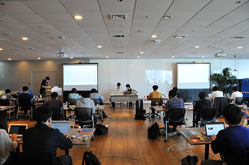

第6回大会は、エンジニア社員が作成した新問題も登場し、悪戦苦闘しながらも、皆さん一生懸命取り組んでいらっしゃいました。 そのあとの懇親会中の問題解説に聞き入る姿は印象的でした。

集合時間には雨が降ってましたが、開始とともに晴れてまいりました！git challengeチュートリアル中です。#mixi_git pic.twitter.com/VLSb8fRkTZ
— ミクシィグループ 新卒採用公式アカウント (@HR_mixi) September 2, 2017
今回のランチは「駅弁」をご用意させていただきました。#mixi_git pic.twitter.com/MmAlrMZ3D1
— ミクシィグループ 新卒採用公式アカウント (@HR_mixi) September 2, 2017
競技開始となりました！新問題も登場して、過去最大の問題数での実施となります。皆さん、頑張ってください！！ #mixi_git pic.twitter.com/5ica2ZGlMA
— ミクシィグループ 新卒採用公式アカウント (@HR_mixi) September 2, 2017
開始から約2時間経過しました。そろそろ甘いものがほしくなるころですね。
— ミクシィグループ 新卒採用公式アカウント (@HR_mixi) September 2, 2017
今日は「宝くじの日」とのことで、おやつに"おみくじ付き"のどら焼きをご用意しました。 #mixi_git pic.twitter.com/v5EIMHMtgo
競技終了しました、みなさんお疲れ様でした。只今、懇親会中です。#mixi_git pic.twitter.com/HvsQQVT7H2
— ミクシィグループ 新卒採用公式アカウント (@HR_mixi) September 2, 2017